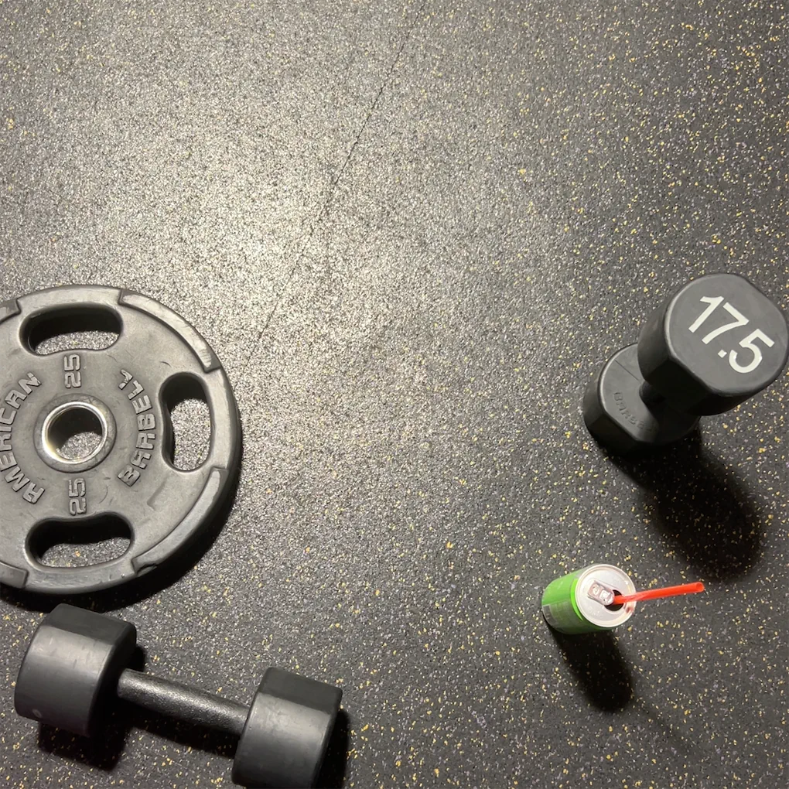
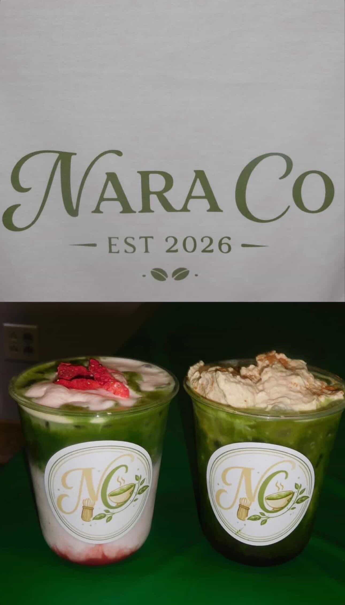
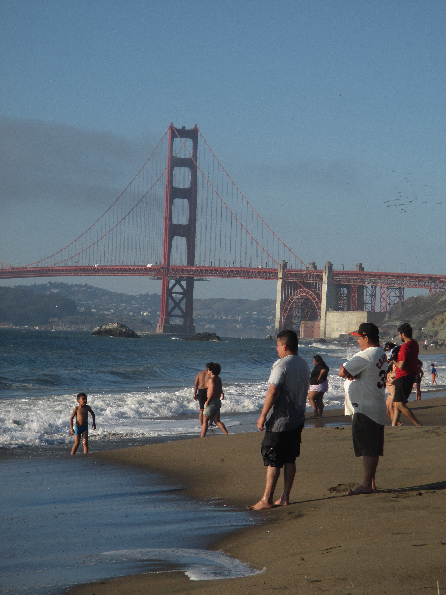

My Hobbies

🏋️ The Gym
I've been going to the gym for 3 years. I enjoy challenging myself, I honestly found it as my way of relieving stress, staying healthy, and staying fit. I love seeing my strength improve, its all of it in one, I also look for new ways to challenge myself, I love the feeling of accomplishment after a good workout. I also have been trying pilates and I love it, I feel like it is a great way to improve my flexibility and core strength.

🍵 Matcha
One of the coolest things I've been able to brag about is starting a small matcha business with my two best friends. We're called Nara.Co, and we sell handcrafted matcha drinks and Red Bull-infused refreshers. We launched our business in February 2025 and have been growing ever since. We've had the opportunity to do pop-up events at schools, graduation parties, and other local events. The support we've received has been amazing, and we're incredibly grateful for all the positive feedback from our customers. As our business continues to grow, we're excited to expand and reach even more people. Our biggest dream is to one day open our own café and share our passion for matcha with the community.

🌊 The Beach
The beach is one of my favorite places to relax. I love spending time by the ocean, especially watching the sunset. Whenever I'm not at school, you can usually find my friends and me at Pacifica Beach, the Taco Bell by the beach, or Fort Funston. I enjoy listening to the sound of the waves and feeling the sand between my toes. Being at the beach helps me unwind and appreciate nature. I also like swimming, even though I'm still working on improving my skills. I hope to become a better swimmer and spend even more time at the beach in the future.